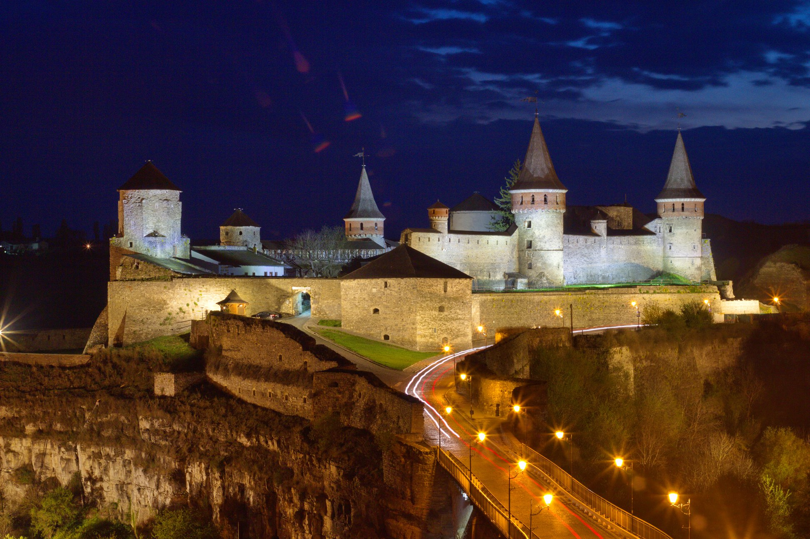
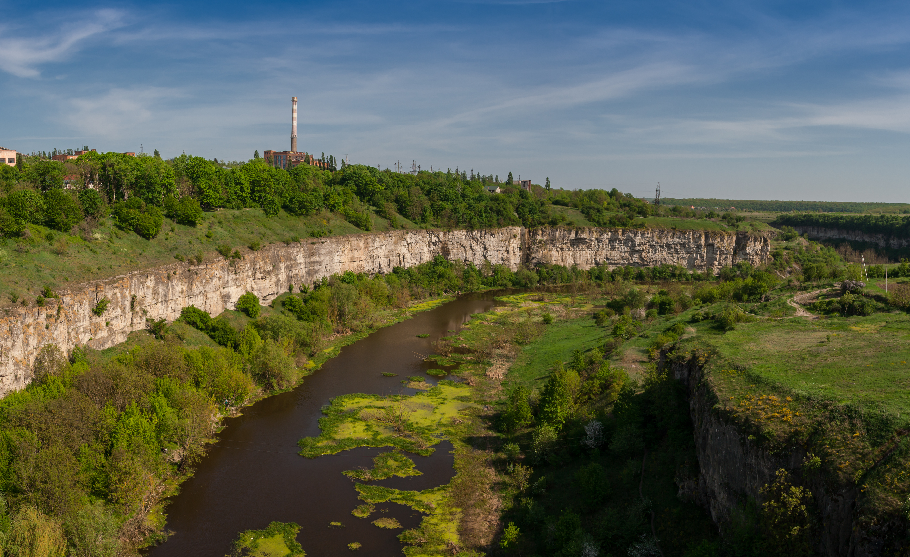
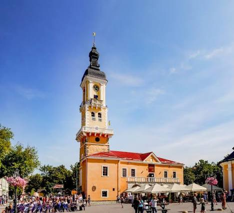

Фестиваль повітряних куль
Цієї весни небо над фортецею знову заповнять яскраві аеростати...
МІСТО СЕМИ КУЛЬТУР
Зануртеся в атмосферу середньовіччя та неймовірної природи.

Символ міста та одна з найвидатніших пам'яток фортифікаційного мистецтва України.

Унікальна природна пам'ятка, що мальовничо оточує старе місто.

Найстаріша ратуша України, розташована на центральній площі Старого міста.
Цієї весни небо над фортецею знову заповнять яскраві аеростати...
Запрошуємо на щорічну реконструкцію боїв у стінах замку...